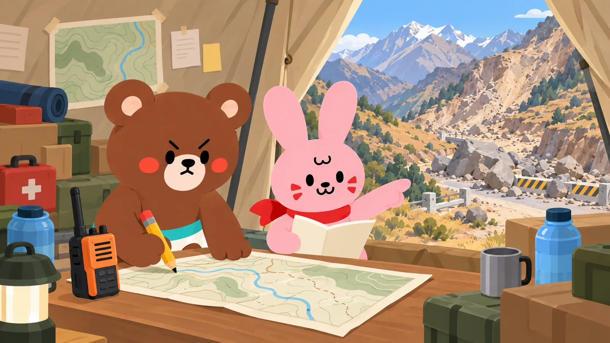
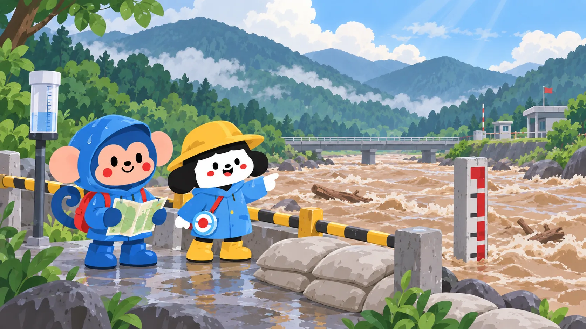
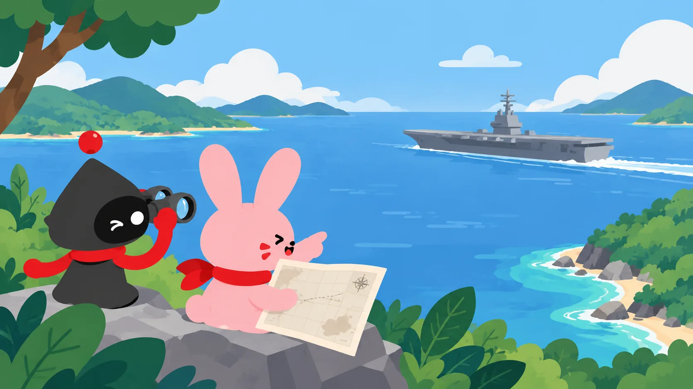

大の里、史上最速で第75代横綱に昇進
新横綱の誕生に、地元や相撲ファンから大きな期待が寄せられています。
大の里は、相撲でいちばん高い地位、横綱になりました。
Ōnosato has reached yokozuna, the highest rank in sumo.大之里晉升為相撲最高級別「橫綱」。EASY NEWS · JAPAN TODAY
今日のニュースを、自分の日本語で読もう。
Real current stories with furigana, narration and translation when you need them. Read one useful article, keep one useful word.
新横綱の誕生に、地元や相撲ファンから大きな期待が寄せられています。
大の里は、相撲でいちばん高い地位、横綱になりました。
Ōnosato has reached yokozuna, the highest rank in sumo.大之里晉升為相撲最高級別「橫綱」。新横綱の誕生に、地元や相撲ファンから大きな期待が寄せられています。
1 min · 7 keywords利用者の投票で、駅やアプリに登場する新しい顔を決めます。
1 min · 5 keywords沿岸の住民が避難し、交通や建物への影響が確認されています。
1 min · 7 keywords王室は、夫妻が公務を担わない立場を今後も維持すると説明しました。
2 min · 7 keywords地域の実際の大きさを、より公平に表すことが目的です。
2 min · 7 keywords国境周辺で多くの死者と行方不明者が出て、救助活動が続いています。
1 min · 5 keywords首都キーウ近郊の攻撃で多くの死傷者が出て、調査が始まります。
1 min · 7 keywords
N3 · ENVIRONMENT外国人旅行者も被害に巻き込まれ、各地で救助活動が続いています。
2 min · 10 keywords
N5 · ENVIRONMENT洪水で重要なインフラが流され、被災地への救助が難しくなっています。
1 min · 5 keywords一家はイギリスで私的に生活し、公務には復帰しない見通しです。
2 min · 7 keywords多くの女性が規則に抵抗し、SNSでも抗議の声を上げています。
1 min · 10 keywords関税をめぐる合意に至らず、カナダは対抗措置を準備しています。
2 min · 10 keywords国際社会は計画が中東の緊張を高めるとして、強く懸念しています。
2 min · 10 keywords
N5 · TECHNOLOGY空母は中東へ向かいながら、インド洋で航空任務を実施しています。
2 min · 5 keywordsWORD FROM THIS SECTION
yokozuna · grand champion
大の里が横綱に昇進しました。
Ōnosato was promoted to yokozuna.YOUR KOKOMONSTER ACCOUNT
Save useful words, keep your reading history and bring expressions into Guided Chat.
Continue to login →